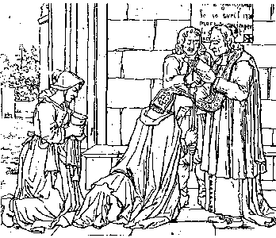

Ar Beleg forbannet
Barzhaz Breizh
Ton
|
1. Selaouit eur person a eskopti Gwenned,
Pell diouzh ar Rouantelez vit ar feizh forbannet, Pell eo a gorf diouzoc'h, med e impinion A zo dalc'hmad ganeoc'h kenkoulz hag e galon.
2. Abaoe an amzer kriz ha diskonfortuz
3. 0 deiz leun a c'hlac'har, o deiz leun a dristez !
|
12. Eskibien, beleien ha menec'h, forbannet
gant al leanezed ar vro oll dilezet ; Tamm overenn bet mui, na tamm sakramantoù, Hag an dréz o kreski ebarzh on ilizioù ! 13. Linserioù an aoter, kroaz ha kaliz saotret, Ha ganto ar c'hleier e peb parrez laeret ; An iliz eo begin, hag he madoù forzhet ; Hag en armel santel kezh Jezuz forbannet ; 14. Saotret eo an iliz ; laket da varchosi, Koulz 'vel an aoter-vraz d'eun daol a zebri ; Ar gwir gristenien, an dud vad o ouela, Hag ar re fall beplec'h, beplec'h oc'h o gwaska ! 15. 0 va Doue, fachet oc'h akozh d'on pec'hedoù ! Ni-unan zo kirieg da oll on poanioù ; Pa vim feal deoc'h, e vioc'h feal deom. Pellaet om-ni diouzoc'h, ha C'hwi bella diouzom. 16. En Ho gourdrouz, neoac'h, leun oc'h a vadelez, Hag ekreiz on anken C'hwi ginnig deom ar peoc'h. Truezh ! va Doue ! truezh ! ni zo Ho pugale, Deuz an droug on-euz graet distaolit d'eom arze ! 17. D'ar rouantelezh oll, d'an iliz glac'haret, Dazkorit, o va Doue, Ho madelezh, abred. Ho ped truezh deoc'h eom, o Doue a garantez, Dazkorit deom ar peoc'h, dazkorit deom ar feiz. 18. Pegoulz e vezim-ni, bugulien ha denved, Vit Ho meuli, va Doue, a-gevred, dastumet ? Pegoulz e teuy an deiz da zec'ha on dareoù, Ha da gana gloar d'Eoc'h enn on ilizioù ? 19. 0 deiz a eurusted ! o deiz leun a zouzter ! Va sonj a zo ganit peb eur ha peb amzer. 0 Doue a vadelezh hastit an termen-ze, Vit ma hellin-me c'hoazh gweled va bugale ! 20. Kea, kanenn hirvouduz, konfort a va spered, Kea, ha lar da va fobl, oll va glac'har kalet. Dougit-hi, eled mad, ha larit mad dezo, Ema ha deiz ha noz oll va sonjoù ganto. 21. Turzunell, eostig-noz, gant an amzer-nevez, E yeoc'h da gana doc'h dor va bugale ; Ha perag n'hellan ket nijal ivez ganeoc'h, Evit mond, dreist ar mor, beteg on bro, veldoc'h ? 22. A! grit avad em lec'h, kanit a-bouez ho penn: -Dalc'hit mad doc'h ar Feiz,dalc'hit doc'h ho lezenn Ha grit dezo respont : - Ni zalc'ho doc'h ar Feiz ! Kentoc'h mervel mil gwech 'ged ankouaad on Doue ! |